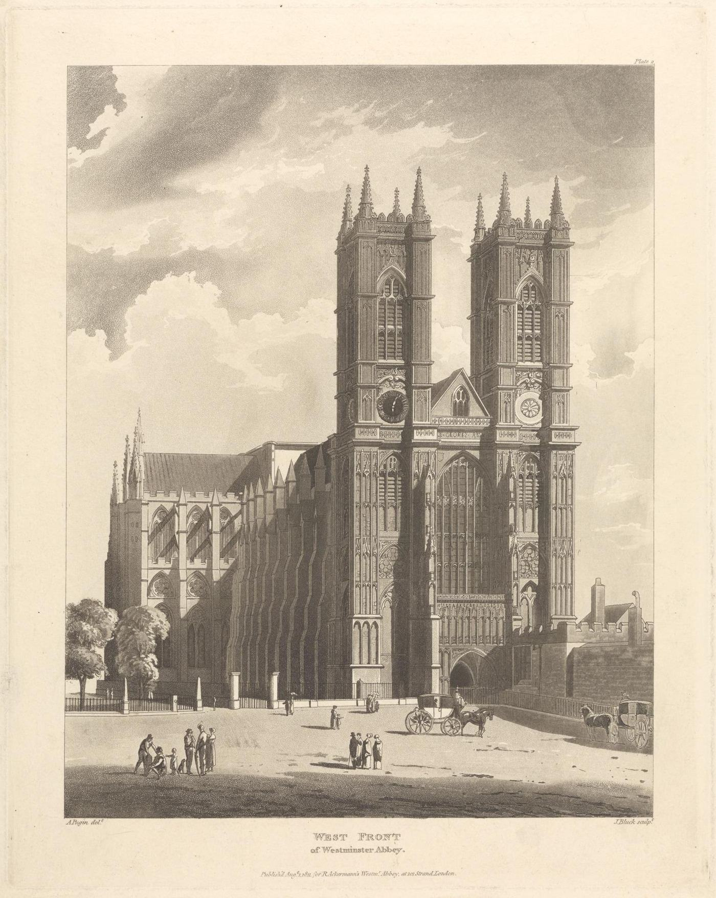
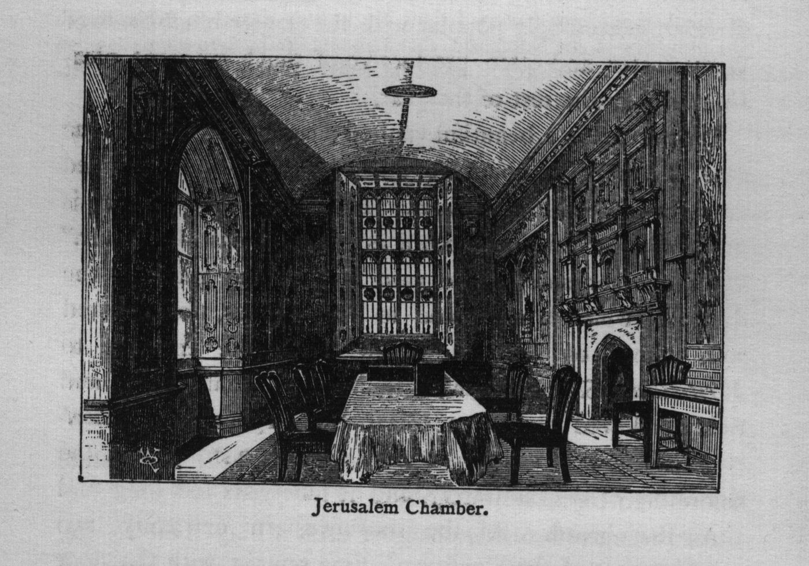
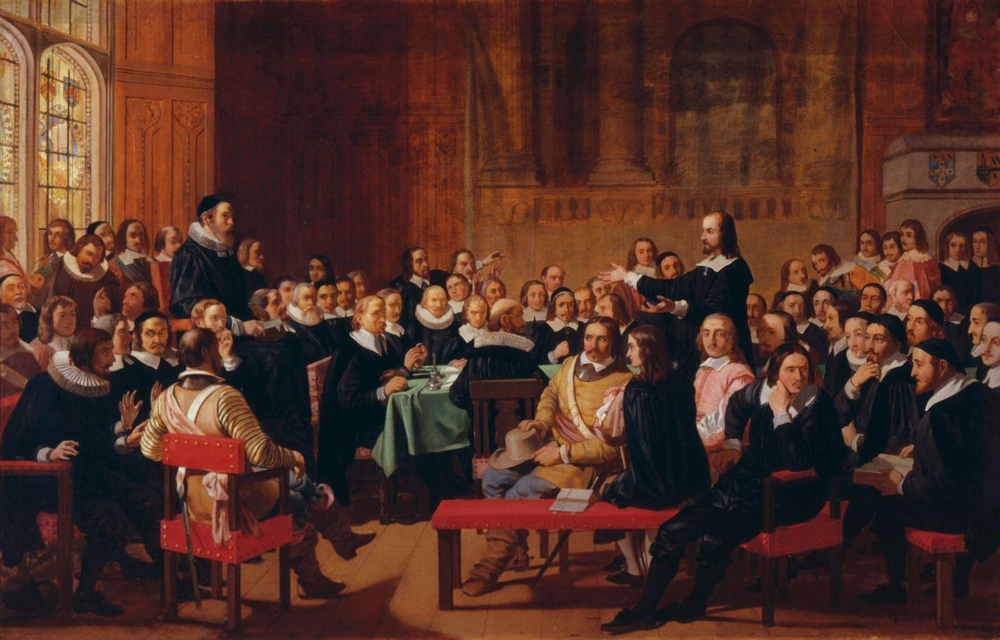
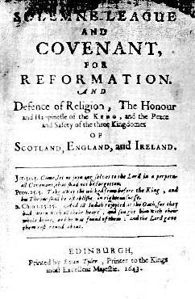
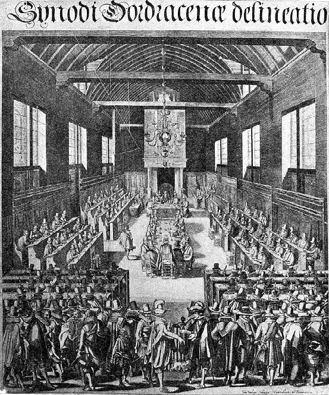
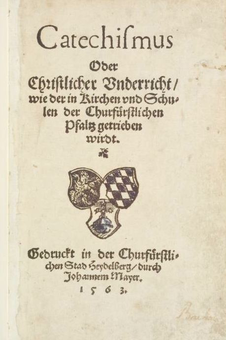

历史 · 地理 · 文化
时间线、故事线、互动地图、人物与派别、文化区域——还原1640年代伦敦西敏寺里那场长达五年半的神学会议的真实背景与真实情境。
⏳时间线（可筛选）
注：时间线中关于普世信经与三项联合信条的年代说明以 ccifellowship.org 引言为准；西敏会议的日期依据通行的教会史记载整理。
🎭故事线：六幕剧
⛈️ 第一幕 · 风暴前夜（1625–1640）
查理一世与大主教劳德推行高派礼仪与主教统治，清教徒受压。1637年，查理强迫苏格兰使用新祈祷书，爱丁堡圣吉尔斯大教堂爆发骚乱；1638年苏格兰人签署《国民圣约》，随后的「主教战争」迫使国王召开国会。
⚔️ 第二幕 · 国会与战争（1640–1643）
「长期国会」与国王的冲突升级为1642年内战。国会决心改革英格兰教会，于1643年颁令召开神学家会议，向国会提供意见——会议是国会的咨询机构，不是独立的教会总会。
🤝 第三幕 · 盟约（1643）
国会需要苏格兰军队，苏格兰则要求宗教上的盟约。《庄严联盟与圣约》由此产生，目标是三国在信仰告白、教会治理、敬拜指南与要理问答上的统一。苏格兰派出专员（如亨德森、卢瑟福、吉莱斯皮、贝利）参与会议。
🕯️ 第四幕 · 耶路撒冷厅的日与夜（1643–1647）
会议先修订《三十九条》，后转而起草全新的文件。长老派、独立派（「异议弟兄」）、伊拉斯都派围绕教会治理激烈辩论；外面战火未熄（马斯顿荒原、纳斯比）。《公共敬拜指南》《教会治理形式》先后完成，1646年底信仰告白完成。
📘 第五幕 · 文件诞生（1646–1648）
信仰告白附经文于1647年呈交；苏格兰教会总会于1647年8月批准。大小要理问答于1647年秋呈交，1648年附经文；苏格兰总会于1648年7月批准。英格兰国会虽部分采纳，但政局巨变使其未能在英格兰长期实行。
🌍 第六幕 · 王冠落地之后（1649–今天）
1649年查理一世被处决；1660年王政复辟，1662年大批清教徒牧师被逐。西敏标准却在苏格兰扎根（1690年再获确认），经由移民传到北美（1729年采纳法案、1788年修订），最终成为全球长老会与众多改革宗教会的信仰准则，也进入华人教会。
📍互动地图
底图 © OpenStreetMap 贡献者。点击标记查看说明；可缩放到伦敦西敏区查看西敏寺、耶路撒冷厅、圣玛格丽特教堂与国会的相对位置。






👥会议中的人物与派别
🟦 长老派（多数）
主张由长老会议治理教会，与苏格兰立场相近；如埃德蒙·卡拉米、安东尼·塔克尼、爱德华·雷诺兹等。
🟩 独立派（「异议弟兄」）
主张会众自治，人数少但影响大：托马斯·古德温、菲利普·奈、耶利米·巴勒斯等，1644年发表《辩护陈述》。
🟨 伊拉斯都派
主张国家对教会纪律有最终权柄：约翰·塞尔登、约翰·莱特富特、托马斯·科尔曼等。WCF 30.1「在国家官员以外」设立教会治理，正是对此的回应。
🟥 苏格兰专员
无表决权，但影响深远：亚历山大·亨德森、塞缪尔·卢瑟福、乔治·吉莱斯皮、罗伯特·贝利（其书信是重要史料）。
⬜ 主持人
威廉·特威斯（William Twisse）为首任会议主持（prolocutor），1646年去世后由查尔斯·赫尔（Charles Herle）接任。
🟪 缺席者
大主教厄舍（James Ussher）虽被提名却未出席，但他主导的《爱尔兰信纲》（1615）深刻影响了信仰告白的结构与用语。
🏰文化区域特征
| 区域 | 政治与教会结构 | 敬虔与文化特征 | 与西敏标准的关系 |
|---|---|---|---|
| 🏴 英格兰 | 国教会（主教制）+ 清教运动；国会政治与普通法传统；伦敦印刷业与小册子战 | 清教徒「平实讲道」、守主日、家庭敬拜、良心问题（案例神学） | 会议地点与召集者；信条的法律与政治处境（官员条款） |
| 🏴 苏格兰 | 长老制「柯克」（Kirk）、总会制度；盟约传统（1638国民圣约） | 教会独立于王权的「两国论」、公开的教会纪律、要理问答教育 | 推动“统一”的动力；最终采纳并长期实行西敏标准 |
| ☘️ 爱尔兰 | 厄舍与都柏林三一学院；1615年《爱尔兰信纲》；1641年叛乱 | 学术性的改革宗正统 | 信条结构与用语的蓝本之一 |
| 🇳🇱 低地国家 | 在西班牙统治与逼迫下形成的改革宗教会；多特大会 | 殉道者信仰、会议制教会、诗篇吟唱、海德堡问答讲道 | 三项联合信条；国际改革宗正统的共识 |
| 🇩🇪 普法尔茨 | 选帝侯腓德烈三世；海德堡大学 | 温暖、个人化的要理问答传统（“唯一的安慰”） | 圣约神学先驱（乌尔西努、俄利维亚努） |
| 🇨🇭 日内瓦/瑞士 | 加尔文、贝扎、布林格 | 学院与流亡者网络；圣经注释传统 | 英格兰/苏格兰改教者的神学母校 |